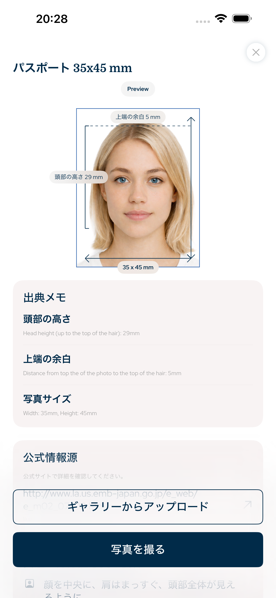

Japan · 証明写真アプリ, パスポート写真, ビザ写真, ID写真, 履歴書写真, iPhone証明写真
パスポート写真・証明写真を正しいサイズで作成
このiPhoneアプリは、パスポート写真、ビザ写真、ID写真、在留カード用写真、運転免許証用写真を、写真サイズ、顔の比率、上余白、背景、書き出し形式に合わせて準備します。
- 顔
- AI変更なし
- トリミング
- 頭 + 上余白
- 書き出し
- デジタル + 印刷

上余白
正確
顔の比率
ガイド付き
検索可能な要件
公式の証明写真規格に基づいた設計
アプリは、写真サイズ、ピクセル書き出し、頭の高さ、顔の位置、上余白、背景、印刷レイアウトなどの書類写真規格に特化しています。
顔の比率と上余白のガイド
AIによる顔の変更なし
デジタル保存と印刷シート
Japan document types
このアプリで準備できる写真
証明写真アプリは、デジタルファイルまたは印刷用シートが必要なiPhoneユーザーのための一般的な公式写真ワークフローをカバーします。
パスポート写真
ビザ写真
ID写真
在留カード写真
印刷シート
写真の整合性
AIによる顔の変更なし
ワークフローは実用的に設計されています：画像をトリミングし、頭を合わせ、顔を保ち、背景を整えて、正しいサイズで書き出します。公式書類写真の準備のためであり、美容加工のためではありません。
1国と書類タイプを選択
2頭と上余白を調整
3デジタルファイルまたは印刷シートを書き出す
よくある質問
FAQ
AIで顔を変更しますか？
いいえ。顔の特徴は変更せず、サイズ、トリミング、背景、書き出しを調整します。
パスポート写真を作れますか？
はい。国と書類タイプを選ぶと、必要なサイズと構図で書き出せます。
印刷できますか？
はい。デジタルファイルまたは印刷用シートとして書き出せます。
証明写真アプリ
iPhoneでパスポート写真、ビザ写真、ID写真を作成。写真サイズ、顔の比率、上余白、背景、印刷用書き出しに対応。
App Storeからダウンロード